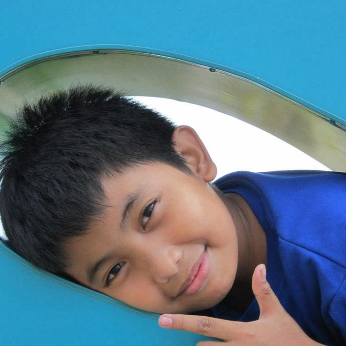
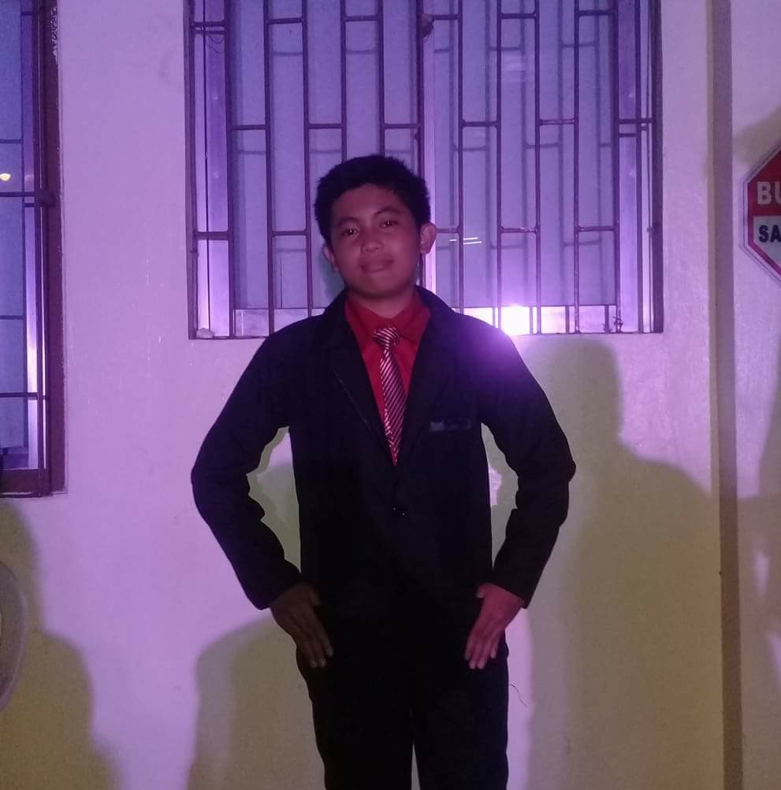
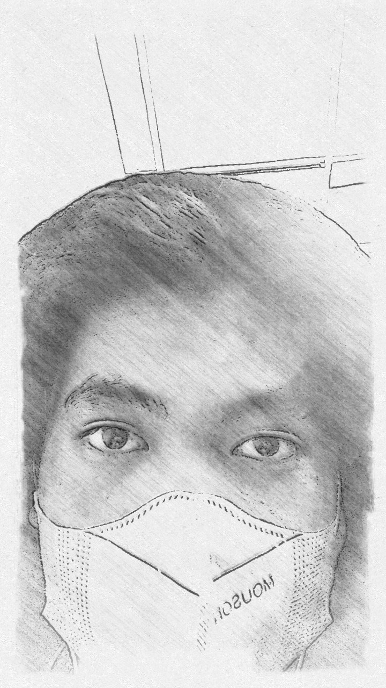

About Me
CHILDHOOD YEARS

I am Dirk S. Chacyon, born in Mandaluyong Hospital in the year 2003.1 This is a biography starting from my childhood. Just like any child, I had lots of dreams but i am lazy.2 I wanted to be a Doctor, an Accountant, or a Chef.3 As time passed and I always interacted with a computer whole day, I found myself getting addicted from it and the things I could do inside them.4 I began to grow fond of computers and video games.5 I then thought I wanted a course that related to computers, but when I heard about programming and something in my head sparked thinking that maybe that was what I wanted to do.6 I do not really remember much about my childhood for obvious reasons, but I believe it was really good.7 Though, I remember that I always play hide-and-seek with my childhood neighbors.8 Going to the park to play on the swings and slide.9 Going to the beach and build sandcastles.10 A gathering with neighbors for my birthday celebration every summer.11 Field trips of the school in Enchanted Kingdom.12 Riding bike that has no break that almost made me die.13 I was always in the library to clean and see the girl who has crush on me.14 I was brought to the hospital for the reason that i was diagnosed with UTI.15 I still remember crying loudly when my mother finished her vacation here in the Philippines and going back to Qatar to work.16 I almost died in a vehicle collision on my birthday.17 Whenever we are in the mall I always go to the arcade to play basketball and multiply the tokens.18 I always wake up 4:00 am in the morning to be able to go in the school earlier to see my crush.19 I still remember our picture together.20 I was a member of boy scout and we won championship in disctict tournament and placed 2nd in the national championship.21 I also remember fighting with my siblings because they don't want to let me play the computer.22 Looking back, I was a dull-witted child.23
GO TO TOP
TEENAGE YEARS

As I grew up as a teenager, I also learned to do some things with my brothers while they are playing video games.1 But as time passed, some of them were getting busier with their own lives like school.2 My teenage high school life is by far the best of the best.3 A lot of unexpected things happened, both depressing and joyful.4 I was always tardy when I was in grade seven to the point that every flag ceremony I was late.5 My history teacher was also the teacher of my oldest brother.6 I does not have a friend since I don't talk too much that time.7 Fortunately, I made more a lot of genius friends in grade 8, and the whole year we always have a presentation about news, history and florante at laura performances.8 In grade 9 there was an unfortunate event happened to my class, to be specific my classmate committed suicide.9 All of us are shocked from what happened, we cried so hard for the reason that she is a joyful classmate.10 My first concert experience with my friends from other section.11 Going to prom just to seat and watch people dance.12 I got a perfect score in my Cookery subject examination.13 Me and my classmates always play video games after school.14 I had the best christmas party experience in grade 10 wherein we are the only section who is partying until night.15 My grade 10 life was exhausting but best things happened.16 I got the highest grade in math in our section.17 Having deep conversation with my classmates when there is no teacher in the classroom.18 Washing dishes on my cookery class was the only thing I loved.19I graduated and transfer school in senior high school in University of the East.20
GO TO TOP
COLLEGE YEARS

My first year in college was filled with new experiences and challenges.1 It was still pandemic when my 1st year of college starts.2 I do not even talk to anyone since I was shy to talk.3 I had a hard time to understand the lessons since it was a online class session.4 I was really sad and hopeless in online class.5 I learned pretty well in face to face classes than online class.6 I am really happy when I pass all the subjects in my first year of college except calculus.7 My life turn upside down when I failed my calculus subject.8 I was depressed from what happened.9 It felt like the world does not deserve me and should disappear.10 I am having suicide thoughts which is really bad.11 I always think about choosing the best way to die which are painless death or suffer first before dying.12 Everyday I think about my future, I mean how a average clueless dumb stupid person like me will have a successful future.13 I never believe on myself, I never did.1 I do not know what to do anymore.14 I wish to go back being a sperm.15 I do not want to lived anymore.16 I mean yeah people change, but why I feel like I become a worst person not a better person.17 A smile is the easiest way out of a difficult situation.18 I love being alone, but not the feeling of being alone.19 At the end of the day I am who I am.20
GO TO TOP